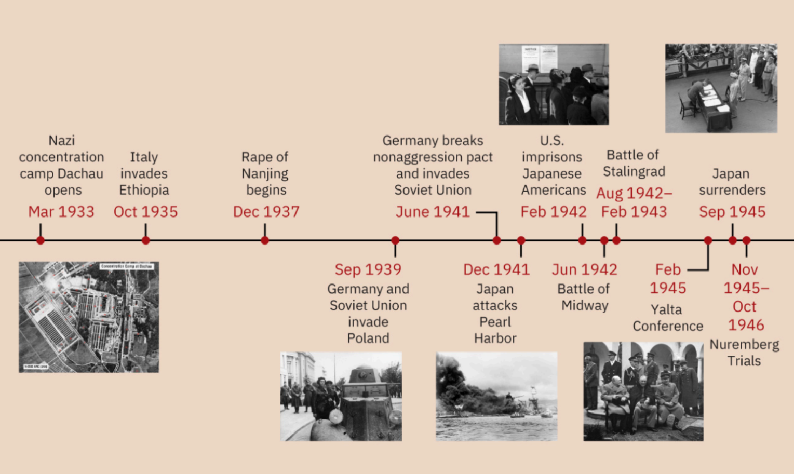
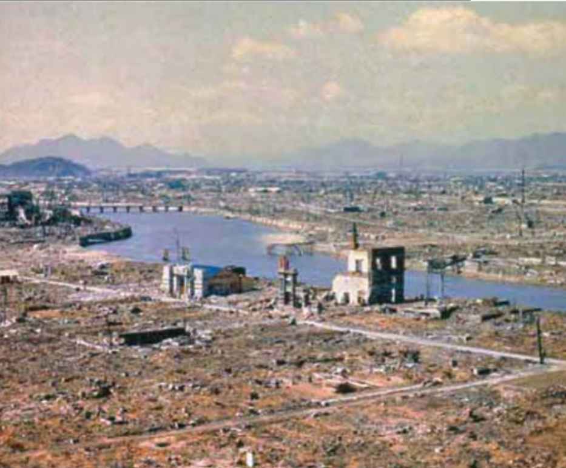

Начало войны (когда Германия напала на Польшу)
В первую очередь делается акцент на том, что помимо Германии в Польшу также вторгся и СССР. Создается ощущение, что СССР несколько уравновешивается с Германией в этом поступке
Источник №1

Тут сказанно о нападении в 1939 и Германии и СССР.[4]
Here I want something to say
Источник №2
Пакт Молотова-Риббентропа
До начала 1939 года Гитлер рассматривал Польшу как потенциального союзника в будущей войне против СССР за завоевание «жизненного пространства» (lebensraum). Однако принятие Польшей англо-французских гарантий безопасности вынудило его пересмотреть свою позицию и согласиться на временное сотрудничество с Советским Союзом, о чём советовали некоторые его приближённые
Сталин, чьими приоритетами были защита СССР и восстановление контроля над частью бывшей Российской империи, согласился рассмотреть предложение Германии о пакте о ненападении. Договор был подписан 24 августа 1939 года. Помимо обязательств о взаимном нейтралитете, в секретном протоколе были обозначены сферы интересов Германии и СССР в Восточной Европе:
* В советскую сферу влияния вошли Прибалтийские государства и Бессарабия (Румыния).
* Польша подлежала разделу между двумя державами.
1 сентября 1939 года Германия вторглась в Польшу, а 3 сентября Великобритания и Франция объявили ей войну. В соответствии с тайными договорённостями пакта 17 сентября 1939 года СССР начал вторжение в восточные регионы Польши, к тому времени уже практически разгромленной немецкими войсками. К началу октября Польша была полностью оккупирована и разделена между СССР и Германией, при этом Советский Союз получил большую часть территорий.
[1]
коренной перелом в войне (Сталинградская битва: как она описана, как описаны ее итоги)
Сложилась ощущение, что глупенькие немцы о зиме не знали
Источник №1
Отступление немецких войск из России
В сентябре 1942 года немецкие войска атаковали Сталинград — важный промышленный центр СССР. Советская армия оказала ожесточённое сопротивление. С приближением зимы немецкий командующий умолял Гитлера разрешить отступление, но получил отказ.
Бои продолжались всю зиму. Советские войска провели масштабное контрнаступление, используя танки на замёрзшей территории, что привело к окружению немецкой группировки и блокаде её снабжения. Тысячи солдат вермахта погибли от холода и голода. К февралю 1943 года остатки немецких сил капитулировали.
Обе стороны понесли колоссальные потери. Хотя в тот момент это не было очевидно, поражение под Сталинградом стало переломным моментом войны. Советские войска начали вытеснять немецкую армию на запад — с территории СССР в направлении Германии.
Источник (2)
как описано освобождение Берлина (кто, какими усилиями)
Капитуляция Германии
В конце апреля 1945 года советские войска вошли в Берлин. Адольф Гитлер, находившийся в своём бункере, осознавал неизбежность поражения. 30 апреля руководитель, подчинивший значительную часть Европы, покончил жизнь самоубийством.
2 мая Берлин был полностью взят под контроль Красной Армией. Спустя пять дней, 7 мая, немецкое командование подписало акт о безоговорочной капитуляции в штабе генерала Эйзенхауэра во Франции. Союзники объявили 8 мая Днём Победы в Европе (V-E Day), ознаменовав окончание боевых действий на европейском театре военных действий.(2)
всё-таки СССР - враги или союзники?
3 Великий Альянс, 1941–1945 гг.
Ключевой вопрос: Каким образом противоречили друг другу военные цели и амбиции СССР, США и Великобритании?
Во второй половине 1941 года глобальная политическая и военная ситуация кардинально изменилась. Теперь не только Великобритания и СССР стали союзниками в борьбе против Германии, но и нападение Японии на военно-морскую базу Перл-Харбор на Гавайях 7 декабря 1941 года привело к вступлению США в войну, поскольку США немедленно объявили войну Японии, одной из стран Оси. В ответ Германия и Италия объявили войну США 11 декабря. Теперь Германия столкнулась с Великим Альянсом в составе Великобритании, США и СССР, лидеры которых стали известны как Большая Тройка. СССР принял на себя основной удар немецкой армии и к 1945 году фактически уничтожил её, однако в ходе этого понёс колоссальные разрушения и около 25 миллионов жертв.
[источник: coldwar]
Pam
Содержание раздела будет добавлено позже.
Применение атомного оружия. Ваши оправдания?
Учебник America History напрямую задает вопрос читателю почему американци сбросили бомбу на Японию. Оправдывается это желанием избежать больших людских потерь со стороны америки и нежеланием Японии капитулировать
Источник №1
Применение атомного оружия и окончание войны
Ключевой вопрос: Почему Соединённые Штаты приняли решение о применении атомной бомбы?
Летом 1945 года Япония продолжала сопротивление. Союзники планировали начать вторжение на японские острова в ноябре 1945 года. Американское военное командование опасалось, что операция может привести к потерям от 200 000 до 1 000 000 человек среди личного состава вооружённых сил США. В связи с этим руководство страны рассмотрело возможность применения атомного оружия.
Манхэттенский проект
После вступления США во Вторую мировую войну в 1942 году был запущен сверхсекретный Манхэттенский проект по созданию атомной бомбы. Под руководством американского физика Дж. Роберта Оппенгеймера группа учёных и военных специалистов в течение трёх лет работала над разработкой этого оружия.
Применение атомного оружия
После успешного испытания бомбы президент Трумэн предупредил Японию о неминуемом разрушении в случае отказа от капитуляции. Японское правительство отвергло ультиматум.
6 августа 1945 года бомбардировщик B-29 «Энола Гэй» сбросил атомную бомбу на промышленный город Хиросиму. В результате взрыва погибло более 75 000 человек, а территория площадью пять квадратных миль была полностью разрушена. Несмотря на это, Япония не капитулировала.
9 августа 1945 года США сбросили вторую атомную бомбу на Нагасаки, что привело к гибели ещё 40 000 человек. 14 августа Япония объявила о капитуляции. 2 сентября 1945 года на борту американского линкора «Миссури» в Токийском заливе представители Японии и стран-союзников подписали официальный акт о капитуляции, что ознаменовало окончание Второй мировой войны.
Источник [ah]
Холокост
Первый источник
В Германии постепенно формировалась правовая система, основанная на принципе "мы против них", и обращение с еврейским населением наглядно демонстрировало устрашающую мощь государства. В ноябре 1938 года два дня жестоких погромов против евреев, спровоцированных убийством немецкого дипломата в Париже польским евреем, вошли в историю как "Хрустальная ночь" (Кристаллнахт). Во время этих беспорядков были сожжены практически все синагоги в Германии, а также 90 процентов предприятий, принадлежавших евреям. Около тридцати тысяч еврейских мужчин были арестованы и отправлены в Дахау, который к тому времени был дополнен лагерями в Заксенхаузене и Бухенвальде. К 1939 году все, кроме примерно двух тысяч, были освобождены.
Кристаллнахт вызвал резкое ухудшение международного положения Германии. В Великобритании возмущенная общественность оказала давление на парламент, добившись разрешения на въезд в страну несовершеннолетним еврейским детям до семнадцати лет без сопровождения взрослых. В течение девяти месяцев до начала войны программа "Киндертранспорт" позволила спасти до десяти тысяч детей. По всей Европе многие евреи стали беженцами, спасаясь от репрессивной политики нацистов. Летом 1938 года во Франции состоялась международная конференция с участием тридцати двух стран, посвященная решению проблемы еврейских беженцев, но ни одно государство не выразило готовности принять этих иммигрантов. В феврале 1939 года в Конгрессе США был предложен законопроект, разрешающий въезд десяти тысячам еврейских детей в 1939 году и еще десяти тысячам в 1940 году. Несмотря на популярность этой инициативы, закон не был принят из-за недостаточной политической поддержки.
Источник [4]
Второй источник
Ужасы Холокоста
По мере продвижения войск союзников к Берлину было сделано шокирующее открытие. На всей территории оккупированной Германией Европы находились концентрационные лагеря, где систематически уничтожались евреи и представители других преследуемых групп.
Вскоре мир узнал о чудовищных событиях, происходивших за немецкими линиями фронта. В ходе так называемого Холокоста нацисты уничтожили около 6 миллионов евреев — мужчин, женщин и детей, что составляло почти две трети еврейского населения Европы. Также нацисты истребили миллионы представителей других этнических групп, включая цыган (рома), русских, поляков, а также политических заключённых и гомосексуалистов. Общее число жертв оценивается в 11 миллионов человек.
Корни Холокоста
Истоки Холокоста лежат в патологической ненависти Адольфа Гитлера к евреям. Он утверждал, что евреи являются низшей расой по сравнению с немцами, и возлагал на них вину за все беды Германии. Придя к власти, Гитлер начал проводить антисемитскую политику, лишая евреев основных прав.
С началом войны антисемитские меры ужесточились. В рамках политики, известной как "Окончательное решение еврейского вопроса", нацистское руководство поставило целью полное уничтожение еврейского населения на подконтрольных территориях. Для этого были построены крупные концентрационные лагеря, куда евреев доставляли в переполненных товарных вагонах. Трудоспособных узников заставляли работать, остальных — убивали.
Освобождение и последствия
Войска союзников, вступая на территорию лагерей, были потрясены увиденным. Впоследствии нацистские лидеры предстали перед судом за эти преступления. Однако сначала предстояло завершить войну с Японией.
(american history 928)
Источник №1

The ruins of Hiroshima after August 6, 1945 []
Пропоганда в цифрах, или их отсутствие
| События↓\Учебники→ |
American History |
Khan Academy |
Cold War |
World History |
| Перл Харбор |
2400 военный и мирных жителей погибло |
|
|
|
| Battle of the Bulge |
20 000 americans died |
|
|
|
| Сталинградская битва |
|
|
|
|
| Высадка в Нормандии |
More than 150,000 Allied soldiers crossed the English Channel to the coast of Normandy in northern France. It was the largest seaborne invasion in history. By the end of the month, 850,000 Allied troops had poured into France. |
|
|
|
|
Khan: говорят кро Сталинградскую и курскую битву, осаду Ленинграда, про их значимость и к чему привели, но цифр нет!
По окончании войны экономика как Европецских, так и азиатский стран была в упадке, что нельзя было сказать про Америку. Помимо лендлиза американские учебники акцентируют внимание на том что они всем помогали (тут и может рождаться пропоганда победы)